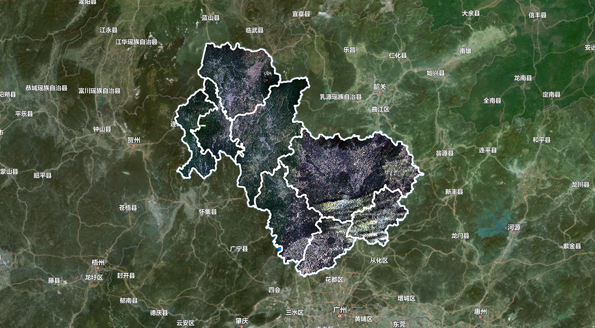
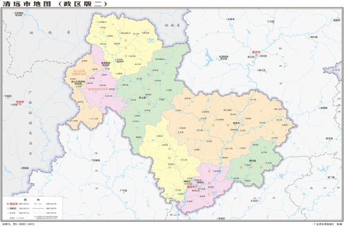

search
区域概况
更多 chevron_right
清远市位于广东省的中北部、北江中下游、南岭山脉南麓与珠江三角洲的结合部。全境位于北纬23°26′56″～25°11′40″、东经111°55′17″～113°55′34″之间。清远市土地总面积1.9万平方千米，约占全省陆地总面积的10.6%。

清远市属亚热带气候，北部雨山、连州、连南、连山为中亚热带，南部青城、英德、佛冈、阳山为南亚热带。夏季最长，其他季节短，南北差异明显。
政府文件
更多 chevron_right